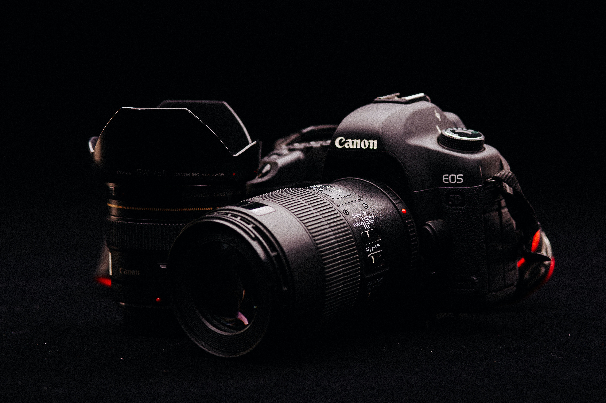
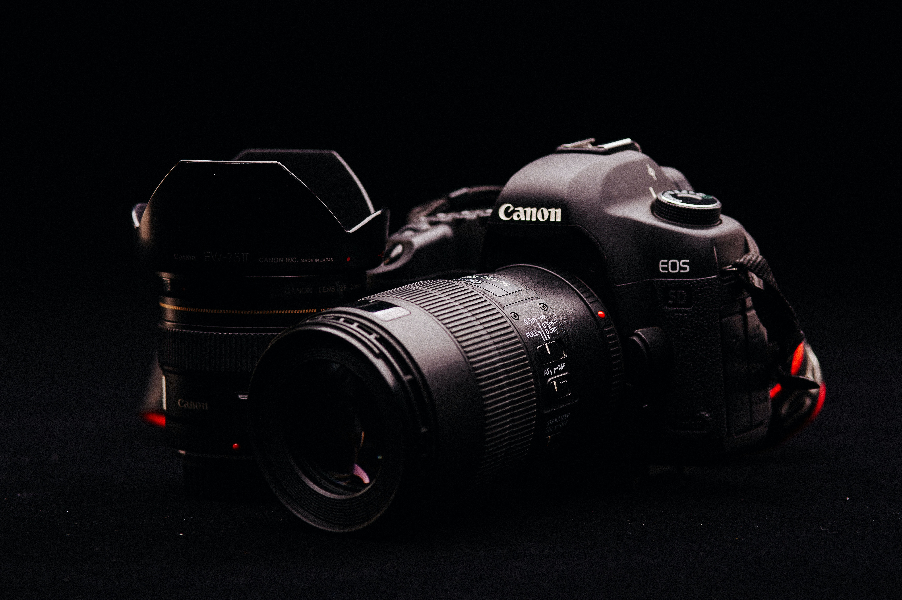

PowerShot G7 X Mark III
The Next Step-Up for Your Everyday Photography
The Next Step-Up for Your Everyday Photography


Better pixels at even better prices
Capture the real memories

Click all you want
Keep clicking every moment
Rs 70,000 Rs.52,995


 
